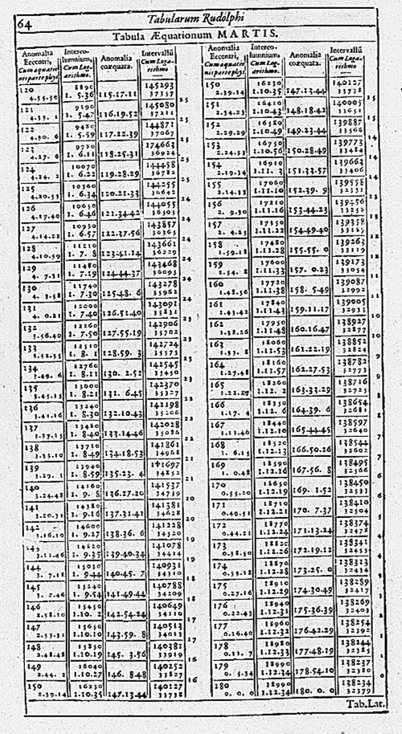
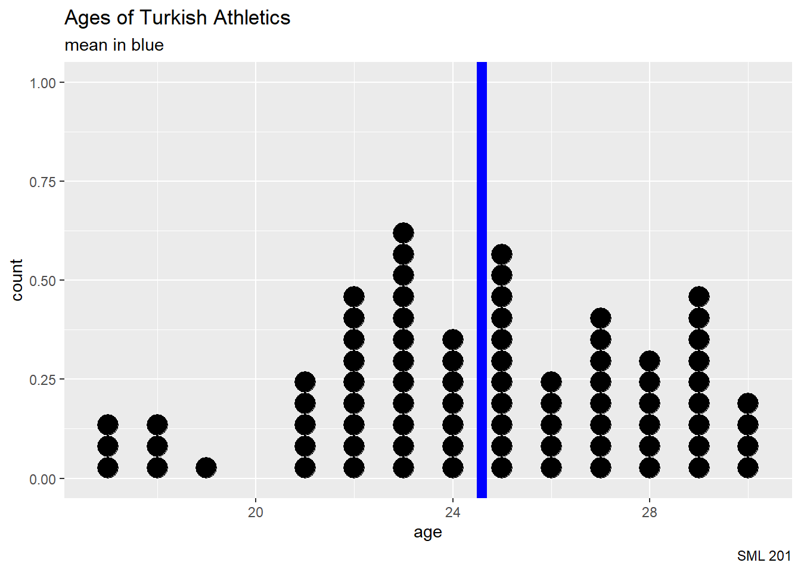
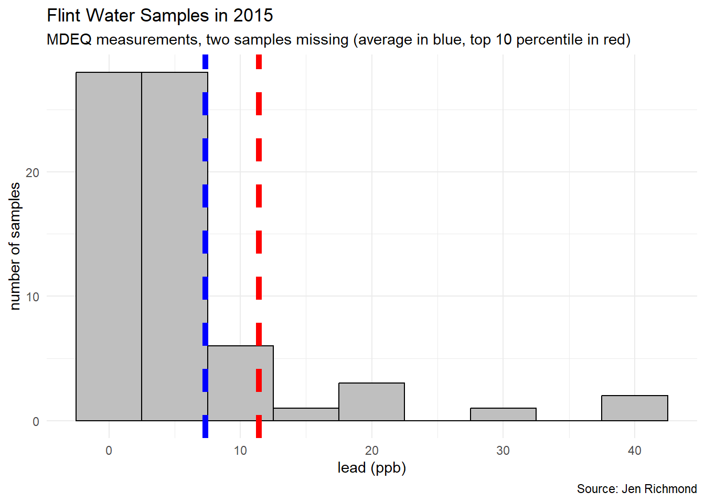
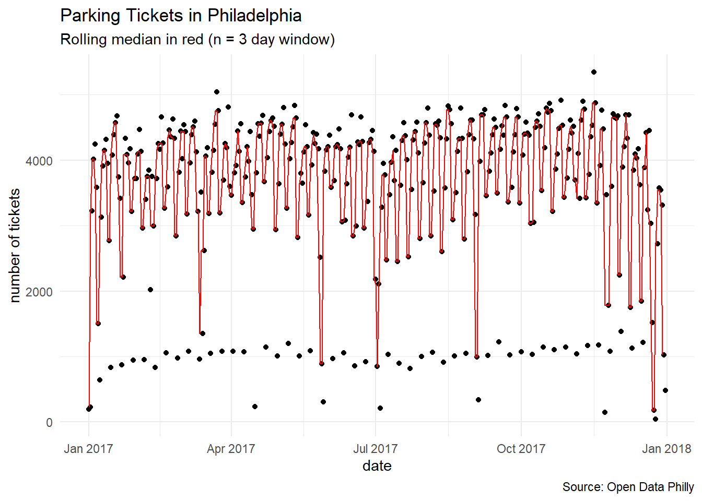

some_data <- c(32, 45, 16, 78, 39)
sum(some_data)
length(some_data)
sum(some_data) / length(some_data)
mean(some_data)SML 201
Start
Goal: Summarize data by centrality
Objective: Compute means and medians

TipAdvice
create a folder on your computer desktop called “SML 201”
- later: place all code scripts and data sets in this folder
To create a new Quarto document, open RStudio and then
File–>New File–>Quarto Document ...- save the file into your
SML 201folder
To run a line of code, the keyboard short cut is
- Windows: CTRL + ENTER
- Mac: CMD + ENTER
Apertif: Astronomy Tables

- 1580: Uranienborg, observatory in Denmark
- 1592: Tycho Brahe publishes Thousand Star Catalog
- 1627: Kepler’s Laws of Planetary Motion
Mean
NoteDefinition
For a list of data
\[\{a_{1}, a_{2}, ..., a_{n}\}\]
the mean or average of the data is defined as
\[\bar{x} = \displaystyle\frac{1}{n}\sum_{i = 1}^{n} a_{i}\] where “x bar” denotes a sample mean
In R
Run each of these lines of code, and describe the code
Missing Data
Run each of these lines of code, and describe the code
some_data <- c(32, 45, 16, 78, NA, 39)
sum(some_data)
length(some_data)
sum(some_data) / length(some_data)
mean(some_data)
mean(some_data, na.rm = TRUE)
WarningDCP1
Case Study: Weights of Olympians
Loading the Data
I have supplied a couple of data sets to a GitHub repository to ease the loading of data for classroom work.
olympic_df1 <- readr::read_csv("https://raw.githubusercontent.com/dsollberger/sml201slides/main/posts/02_centrality/olympic_data.csv")
olympic_df2 <- readr::read_csv("https://raw.githubusercontent.com/dsollberger/sml201slides/main/posts/02_centrality/olympic_data2.csv")Summary Statistics
Run each of these lines of code, and describe the code
mean(olympic_df1$weight)
mean(olympic_df1$weight, na.rm = TRUE)
TipThe fix
olympic_df1$weight[olympic_df1$weight <= 0] <- NA
olympic_df2$weight[olympic_df2$weight <= 0] <- NACase Study: Ages of Olympians
Filter
For this demonstration, let us focus on the athletes from Turkey.
Turkey_df1 <- olympic_df1 |>
filter(country_code == "TUR")Dotplot
Early in an introductory statistics course, a dotplot is useful for visualizing integer data.
mean_1 <- mean(Turkey_df1$age, na.rm = TRUE)
Turkey_df1 |>
ggplot(aes(x = age)) +
geom_dotplot() +
geom_vline(xintercept = mean_1, color = "blue", linewidth = 3) +
labs(title = "Ages of Turkish Athletics",
subtitle = "mean in blue",
caption = "SML 201")
The Outlier

- image source: News 18
Yusuf Dikec
Turkish sharpshooter
- silver medalist (2024 Olympics)
- 10m air pistol mixed team
Age: 51
Filtered Again
Turkey_df2 <- olympic_df2 |>
filter(country_code == "TUR")Dotplot Revisited
Early in an introductory statistics course, a dotplot is useful for visualizing integer data.
mean_1 <- mean(Turkey_df1$age, na.rm = TRUE)
mean_2 <- mean(Turkey_df2$age, na.rm = TRUE)
Turkey_df2 |>
ggplot(aes(x = age)) +
geom_dotplot() +
geom_vline(xintercept = mean_1, color = "blue", linewidth = 3) +
geom_vline(xintercept = mean_2, color = "blue", linewidth = 3) +
labs(title = "Ages of Turkish Athletics",
subtitle = "mean in blue",
caption = "SML 201")
Median
Run each of these lines of code, and describe the code
some_data <- c(32, 45, 16, 78, 39)
sort(some_data)
median(some_data)
some_data2 <- c(32, 45, 16, 78, 39, 5)
sort(some_data2)
median(some_data2)
NoteDefinition
For a sorted list of data
\[\{a_{(1)}, a_{(2)}, ..., a_{(n)}\}\]
the median is the value in the middle of the list (splits list into 50 percentile halves).
- If there are an even amount of elements in the data, then the median is the average of the middle two values.
Medians
median_1 <- median(Turkey_df1$age, na.rm = TRUE)
median_2 <- median(Turkey_df2$age, na.rm = TRUE)
Turkey_df2 |>
ggplot(aes(x = age)) +
geom_dotplot() +
geom_vline(xintercept = median_1, color = "red", linewidth = 3) +
geom_vline(xintercept = median_2, color = "red", linewidth = 3) +
labs(title = "Ages of Turkish Athletics",
subtitle = "median in red",
caption = "SML 201")
Observed Differences
As a preview of concepts that we will need later (for hypothesis testing), we can practice computing a difference in means and a difference in medians
mean_1 #without outlier
mean_2 #with outliermean_1 - mean_2[1] -1.92449abs(mean_1 - mean_2)[1] 1.92449median_1 - median_2[1] 0abs(median_1 - median_2)[1] 0
- The median is robust against outliers!
- image source: Know Your Meme
Reporting
Later, we use the mean for:
- normal distributions (“bell curves”)
- linear regression goes through center of mass
- estimators and other statistical theory
When feasible, compute and report both the mean and median.

- image source: Know Your Meme
WarningDCP2
Side Quest: Median Stack

- image credit: Ben Mauss


Mode
WarningNo mode function in R?
It appears that R doesn’t have a built-in function to compute a statistical mode.
Instead, we will later use tidyverse techniques to compute mode(s) of data.
Segmentation
set.seed(201)
segmented_data <- olympic_df2 |>
select(country_code, gender, height, age) |>
filter(country_code %in% c("CAN", "MEX", "USA")) |>
group_by(country_code) |>
mutate(xbar = mean(age, na.rm = TRUE)) |>
sample_n(3) |>
ungroup()Data types
In R, we use the str command to look at the structure of a data frame.
str(segmented_data, give.attr = FALSE)tibble [9 × 5] (S3: tbl_df/tbl/data.frame)
$ country_code: chr [1:9] "CAN" "CAN" "CAN" "MEX" ...
$ gender : chr [1:9] "Female" "Female" "Male" "Male" ...
$ height : num [1:9] 0 0 0 0 0 0 0 180 0
$ age : num [1:9] 19 22 28 27 31 56 22 32 28
$ xbar : num [1:9] 27.2 27.2 27.2 27 27 ...In this example,
country_codeandgendermay be treated as categorical dataheightandagemay be treated as numerical data
Process
Segmentation is a group by operation followed by an aggregation:
- mean
- median
- mode
- minimum
- maximum
| Segmenting Data | |
| (3 observations per group shown) | |
| country_code | age |
|---|---|
| CAN | 19 |
| CAN | 22 |
| CAN | 28 |
| MEX | 27 |
| MEX | 31 |
| MEX | 56 |
| USA | 22 |
| USA | 32 |
| USA | 28 |
| Source: Kaggle, Petro Ivaniuk | |
segmented_data |>
select(country_code, age) |>
gt() |>
cols_align(align = "center") |>
tab_footnote(footnote = "Source: Kaggle, Petro Ivaniuk") |>
tab_header(
title = "Segmenting Data",
subtitle = "(3 observations per group shown)"
) |>
tab_style(
style = cell_text(weight = "bold"),
locations = cells_column_labels()
) |>
tab_style(
style = list(
cell_text(color = "white", weight = "bold"),
cell_fill(color = "#D80621")),
locations = cells_body(columns = country_code,
rows = country_code == "CAN")
) |>
tab_style(
style = list(
cell_text(color = "white", weight = "bold"),
cell_fill(color = "#006341")),
locations = cells_body(columns = country_code,
rows = country_code == "MEX")
) |>
tab_style(
style = list(
cell_text(color = "white", weight = "bold"),
cell_fill(color = "#0A3161")),
locations = cells_body(columns = country_code,
rows = country_code == "USA")
)| Segmenting Data | ||
| (3 observations per group shown) | ||
| country_code | age | xbar |
|---|---|---|
| CAN | 19 | NA |
| CAN | 22 | NA |
| CAN | 28 | NA |
| MEX | 27 | NA |
| MEX | 31 | NA |
| MEX | 56 | NA |
| USA | 22 | NA |
| USA | 32 | NA |
| USA | 28 | NA |
| Source: Kaggle, Petro Ivaniuk | ||
segmented_data |>
select(country_code, age) |>
mutate(xbar = NA) |>
gt() |>
cols_align(align = "center") |>
tab_footnote(footnote = "Source: Kaggle, Petro Ivaniuk") |>
tab_header(
title = "Segmenting Data",
subtitle = "(3 observations per group shown)"
) |>
tab_style(
style = cell_text(weight = "bold"),
locations = cells_column_labels()
) |>
tab_style(
style = list(
cell_text(color = "#121212"),
cell_fill(color = "#E77500")),
locations = cells_body(columns = xbar)
)| Segmenting Data | ||
| (3 observations per group shown) | ||
| country_code | age | xbar |
|---|---|---|
| CAN | 19 | 27.18072 |
| CAN | 22 | 27.18072 |
| CAN | 28 | 27.18072 |
| MEX | 27 | 26.95370 |
| MEX | 31 | 26.95370 |
| MEX | 56 | 26.95370 |
| USA | 22 | 26.98869 |
| USA | 32 | 26.98869 |
| USA | 28 | 26.98869 |
| Source: Kaggle, Petro Ivaniuk | ||
segmented_data |>
select(country_code, age, xbar) |>
gt() |>
cols_align(align = "center") |>
tab_footnote(footnote = "Source: Kaggle, Petro Ivaniuk") |>
tab_header(
title = "Segmenting Data",
subtitle = "(3 observations per group shown)"
) |>
tab_style(
style = cell_text(weight = "bold"),
locations = cells_column_labels()
) |>
tab_style(
style = list(
cell_text(color = "white", weight = "bold"),
cell_fill(color = "#D80621")),
locations = cells_body(columns = xbar,
rows = country_code == "CAN")
) |>
tab_style(
style = list(
cell_text(color = "white", weight = "bold"),
cell_fill(color = "#006341")),
locations = cells_body(columns = xbar,
rows = country_code == "MEX")
) |>
tab_style(
style = list(
cell_text(color = "white", weight = "bold"),
cell_fill(color = "#0A3161")),
locations = cells_body(columns = xbar,
rows = country_code == "USA")
)
WarningDCP3
Data History: Flint Water Quality
- “exploring lead levels in water samples collected in Flint, Michigan in 2015”
- “samples collected by the Michigan Department of Environment (MDEQ) and data from a citizen science project coordinated by Prof Marc Edwards and colleagues at Virginia Tech”
- data hosted at TidyTuesday, curated by Jen Richmond

- as described in Significance magazine, Volume 14, Issue 2, April 2017
Summary statistics
mu1_mdeq <- mean(flint_mdeq$lead, na.rm = TRUE)
mu2_mdeq <- mean(flint_mdeq$lead2, na.rm = TRUE)
mu_vt <- mean(flint_vt$lead, na.rm = TRUE)
top10_1_mdeq <- quantile(flint_mdeq$lead, 0.90, na.rm = TRUE)
top10_2_mdeq <- quantile(flint_mdeq$lead2, 0.90, na.rm = TRUE)
top10_vt <- quantile(flint_vt$lead, 0.90, na.rm = TRUE)All MDEQ Samples
summary(flint_mdeq$lead) Min. 1st Qu. Median Mean 3rd Qu. Max.
0.00 2.00 3.00 7.31 6.50 104.00 Outliers Removed
summary(flint_mdeq$lead2) Min. 1st Qu. Median Mean 3rd Qu. Max. NA's
0.000 2.000 3.000 5.725 6.000 42.000 2 Independent Test
summary(flint_vt$lead) Min. 1st Qu. Median Mean 3rd Qu. Max.
0.344 1.578 3.521 10.646 9.050 158.000 Histograms
flint_mdeq |>
ggplot() +
geom_histogram(aes(x = lead),
binwidth = 5, color = "black", fill = "gray75") +
geom_vline(xintercept = mu1_mdeq, color = "blue",
linetype = 2, linewidth = 2) +
geom_vline(xintercept = top10_1_mdeq, color = "red",
linetype = 2, linewidth = 2) +
labs(title = "Flint Water Samples in 2015",
subtitle = "MDEQ measurements (average in blue, top 10 percentile in red)",
caption = "Source: Jen Richmond",
x = "lead (ppb)", y = "number of samples") +
theme_minimal()
flint_mdeq |>
ggplot() +
geom_histogram(aes(x = lead2),
binwidth = 5, color = "black", fill = "gray75") +
geom_vline(xintercept = mu1_mdeq, color = "blue",
linetype = 2, linewidth = 2) +
geom_vline(xintercept = top10_2_mdeq, color = "red",
linetype = 2, linewidth = 2) +
labs(title = "Flint Water Samples in 2015",
subtitle = "MDEQ measurements, two samples missing (average in blue, top 10 percentile in red)",
caption = "Source: Jen Richmond",
x = "lead (ppb)", y = "number of samples") +
theme_minimal()Warning: Removed 2 rows containing non-finite outside the scale range
(`stat_bin()`).
flint_vt |>
ggplot() +
geom_histogram(aes(x = lead),
binwidth = 5, color = "black", fill = "gray75") +
geom_vline(xintercept = mu1_mdeq, color = "blue",
linetype = 2, linewidth = 2) +
geom_vline(xintercept = top10_vt, color = "red",
linetype = 2, linewidth = 2) +
labs(title = "Flint Water Samples in 2015",
subtitle = "VT measurements (average in blue, top 10 percentile in red)",
caption = "Source: Jen Richmond",
x = "lead (ppb)", y = "number of samples") +
theme_minimal()
Diagnoses
“the Lead and Copper Rule (LCR) of 1991 is 15 parts per billion (ppb). If this is exceeded in more than 10% of homes tested (or if the 90th percentile value of the total sample is above 15 ppb), action is required.” — Significance, Vol 14, Issue 2
All MDEQ Samples
ifelse(quantile(flint_mdeq$lead, 0.90, na.rm = TRUE) > 15,
"action required", "safe water") 90%
"action required" Outliers Removed
ifelse(quantile(flint_mdeq$lead2, 0.90, na.rm = TRUE) > 15,
"action required", "safe water") 90%
"safe water" Independent Test
ifelse(quantile(flint_vt$lead, 0.90, na.rm = TRUE) > 15,
"action required", "safe water") 90%
"action required" Coda
NoteDo we remove outliers?
- We should not automatically remove outliers
- Deciding on removing outliers is very context dependent.
Quo Vadimus?
Please read the weekly announcement in Canvas
Due this Friday:
- Software Installation
- Precept 1
- CLO Assessment
- Demographics Survey
Project 1:
- assigned: Feb 9
- due: Feb 24
Exam 1: Mar 5

Footnotes
Note(optional) How the data set was altered
I altered the following olympics_data.csv to make classroom demonstrations.
Q <- readr::read_csv("athletes.csv")
Q$weight[Q$weight <=0] <- -99 #imitate old-fashioned missing value recording
Q$age <- lubridate::year("2024-07-26") - lubridate::year(Q$birth_date)
W <- Q |> dplyr::filter(age <= 30)
readr::write_csv(Q, "olympic_data2.csv")
readr::write_csv(W, "olympic_data.csv")
Note(optional) Additional Resources
- great explanation of a moving average
Application (optional): Rolling Mean
source: TidyTuesday (2019-12-03)
-
- filtered to year 2017 data that had latitude/longitude
objective: summarize trends in ticketing

- image source: Matt Rourke/AP Photo
# i.e. started with a very large data set
# and needed to pare it down
tickets_raw <- readr::read_csv("tickets.csv")
tickets_days <- tickets_raw |>
separate(issue_datetime, sep = " ",
into = c("date", "time")) |>
group_by(date) |>
count(date) |>
ungroup() |>
select(date, n)
readr::write_csv(tickets_days, "tickets_days.csv")
tickets_df <- readr::read_csv("tickets_days.csv")Time Series

tickets_df |>
ggplot(aes(x = date, y = n)) +
geom_line() +
labs(title = "Parking Tickets in Philadelphia",
subtitle = "Street Sweeping Violations (2017)",
caption = "Source: Open Data Philly",
y = "number of tickets") +
theme_minimal()Moving Average
A rolling mean or moving average compues the mean across a group of \(L\) (lag) consecutive data points in a time series and slides the “window”.


tickets_df |>
mutate(roll_mean = zoo::rollapply(
n, 3, mean, align = 'left', fill = NA
)) |>
ggplot() +
geom_point(aes(x = date, y = n),
color = "black") +
geom_line(aes(x = date, y = roll_mean),
color = "blue") +
labs(title = "Parking Tickets in Philadelphia",
subtitle = "Rolling mean in blue (n = 3 day window)",
caption = "Source: Open Data Philly",
y = "number of tickets") +
theme_minimal()Rolling Median



tickets_df |>
mutate(roll_median = zoo::rollapply(
n, 3, median, align = 'left', fill = NA
)) |>
ggplot() +
geom_point(aes(x = date, y = n),
color = "black") +
geom_line(aes(x = date, y = roll_median),
color = "red") +
labs(title = "Parking Tickets in Philadelphia",
subtitle = "Rolling median in red (n = 3 day window)",
caption = "Source: Open Data Philly",
y = "number of tickets") +
theme_minimal()
NoteSession Info
sessionInfo()R version 4.5.2 (2025-10-31 ucrt)
Platform: x86_64-w64-mingw32/x64
Running under: Windows 10 x64 (build 19045)
Matrix products: default
LAPACK version 3.12.1
locale:
[1] LC_COLLATE=English_United States.utf8
[2] LC_CTYPE=English_United States.utf8
[3] LC_MONETARY=English_United States.utf8
[4] LC_NUMERIC=C
[5] LC_TIME=English_United States.utf8
time zone: America/New_York
tzcode source: internal
attached base packages:
[1] stats graphics grDevices utils datasets methods base
other attached packages:
[1] zoo_1.8-14 lubridate_1.9.4 forcats_1.0.0 stringr_1.5.1
[5] dplyr_1.1.4 purrr_1.1.0 readr_2.1.5 tidyr_1.3.1
[9] tibble_3.3.0 ggplot2_4.0.0 tidyverse_2.0.0 gt_1.0.0
loaded via a namespace (and not attached):
[1] sass_0.4.10 generics_0.1.4 xml2_1.3.8 stringi_1.8.7
[5] lattice_0.22-7 hms_1.1.3 digest_0.6.37 magrittr_2.0.3
[9] evaluate_1.0.4 grid_4.5.2 timechange_0.3.0 RColorBrewer_1.1-3
[13] fastmap_1.2.0 jsonlite_2.0.0 scales_1.4.0 cli_3.6.5
[17] rlang_1.1.6 crayon_1.5.3 bit64_4.6.0-1 withr_3.0.2
[21] yaml_2.3.10 tools_4.5.2 parallel_4.5.2 tzdb_0.5.0
[25] curl_6.4.0 vctrs_0.6.5 R6_2.6.1 lifecycle_1.0.4
[29] htmlwidgets_1.6.4 bit_4.6.0 vroom_1.6.5 pkgconfig_2.0.3
[33] pillar_1.11.0 gtable_0.3.6 glue_1.8.0 xfun_0.52
[37] tidyselect_1.2.1 rstudioapi_0.17.1 knitr_1.50 farver_2.1.2
[41] htmltools_0.5.8.1 rmarkdown_2.29 labeling_0.4.3 compiler_4.5.2
[45] S7_0.2.0